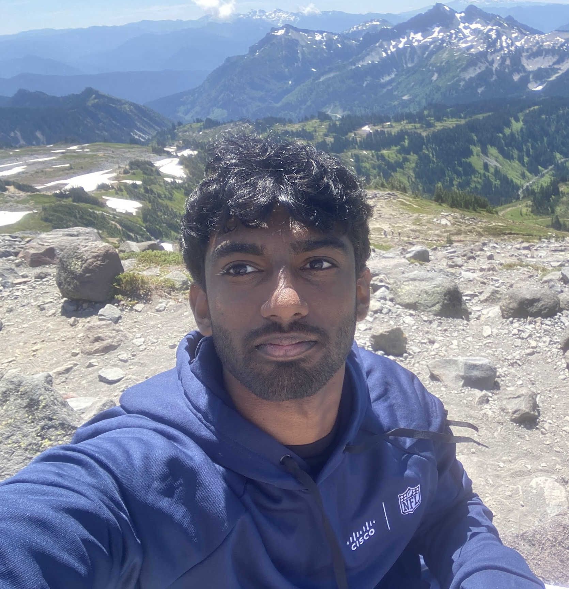

About Us
Vince Frey

I am a Junior majoring in Information Science with a certificate in Computer Science. I love computers and technology, and I am interested in how technology shapes us as a society. I am hoping to better understand biases in technology and how we can mitigate them properly.
Vivek Saravanan
I am a senior majoring in Computer Science and Math. I have previously done research on mitigating bias in AI and LLMs, including the topic of intersectionality in fairness algorithms. My goal is to understand what causes biases in these systems and work toward making them fairer and more equitable.
Grace Bonjour

I am a senior majoring in Information Science. I have always had a strong interest in both technology and sociology so I am looking forward to further explore the ways in which technology intersects with bias, and learning how to prevent it from affecting the future of technology and society.